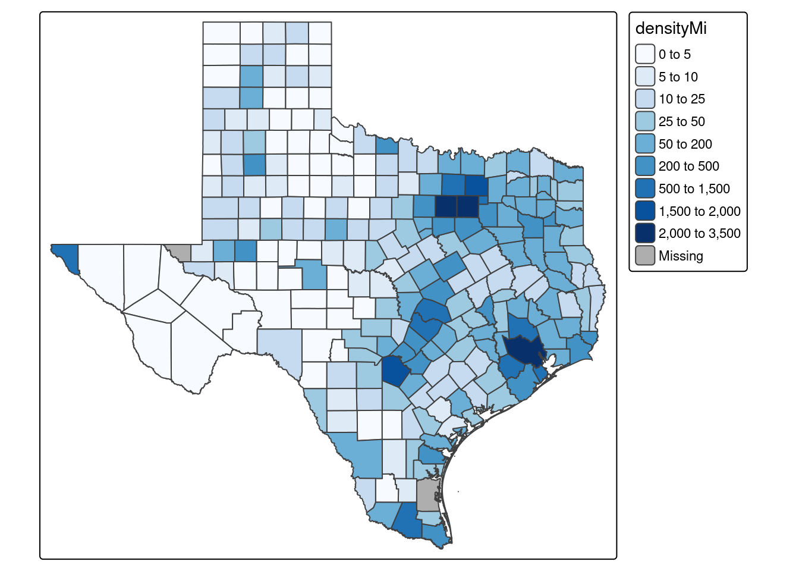

Stat100 Paper
Introduction
Throughout this semester, we studied population density by county’s effect on graduation rate over several of the largest and most highly populous states. These were Florida, New York, and Texas. We gathered graduation data from the board of education websites from each of these states and the population by county data from the World Population Review website. Our hypothesis was that the counties with lower population density would generally have a greater graduation rate. We began with Florida. The third most highly populated state in the US, it had the least variance from its most dense county to its least.
This graph depicts the Florida graduation rate on the Y-axis and the population density on the X-axis. In Florida, the higher population counties are typically found above the mean graduation rate(85%), and this seems to contradict our hypothesis. The highest population county, Pinellas, is in fact slightly above the mean graduation rate at 87.6%. The least populace county is Liberty county which sits comfortably below the mean with a graduation rate of 72.5%. Again this contradicts our hypothesis.
Florida Graph
Florida’s graduation rate is highest on average around the southern tip of the state. The panhandle has an interesting mix of counties with both very high graduation rates and also some of the lowest in the state. The middle of the state is fairly average but has a few standouts in both directions.
Florida Graduation Rate Map
The population is high in the southern tip and middle of Florida with a small group of counties clustered in the south with very low population densities. The pan handle is extremely sparse and only has about four counties with populations of any relevant size.
Florida Population Density Map
Warning: Values have found that are higher than the highest break. They are
assigned to the highest intervalSummary Florida
| avg Grad Rate | min Grad Rate | max Grad Rate | avg Density | min Density | max Density |
|---|---|---|---|---|---|
| 85.63881 | 66.6 | 97.5 | 416.3847 | 9.440191 | 3508.044 |
On average the counties with high population density performed around the mean of graduation rate while the counties of lower density had both the highest and lowest graduation rate. This lead us to speculate that there were factors at play that had more of an effect than the population density overall.
The next state was Texas. The second biggest state in the US, it was the largest we gathered data from in both population and actual land area.
This graph depicts the Texas graduation rate on the Y-axis and the population density on the X-axis. Most of the high population counties in Texas are below the mean graduation rate but the Texas mean is much higher than both of the other states at 94.5%. The highest population county was Dallas which fell well below the mean at an 82.5% graduation rate. The county with the lowest population is King county with a 100% graduation rate. This is likely due to this county being on the King Ranch property and having almost no one on it.
Texas Graph
Warning: Removed 2 rows containing missing values or values outside the scale range
(`geom_point()`).The higher population Texan counties tend to hover beneath the mean. The lower population counties are generally better performing and are on average below the mean graduation rate. The low population counties have both the lowest and highest graduation rates.
Texas Graduation Rate Map
The panhandle of Texas has an extremely high graduation rate with only a few outliers. The center of Texas also has a few counties with a higher comparitive graduation rate but the majority is very uniform. The Texas-Louisiana border also has several high performing counties.
Texas Population Density Map

The panhandle is again an abnormality. It has an extremely low population density with those few counties with a higher density being the earlier mentioned counties struggling with their graduation rate. West Texas has an extremely low population density except for the westmost county, El Paso which has a higher than average population density. The three most dense counties are Dallas and Tarrant, which are right next to each other, and Harris county, which contains Houston.
Summary Texas
| avg Grad Rate | min Grad Rate | max Grad Rate | avg Density | min Density | max Density |
|---|---|---|---|---|---|
| 94.47222 | 59.7 | 100 | 133.8667 | 0.2008782 | 2995.519 |
The lowest density counties in the panhandle all had extremely high graduation rates. The particularly interesting thing was the higher population counties that they surround all did significantly worse comparatively. A trend we noticed was that around the hyper dense counties that had low graduation rates, the lower density counties surrounding all performed much better. This was especially true with the El Paso, Dallas, and Tarrant counties.